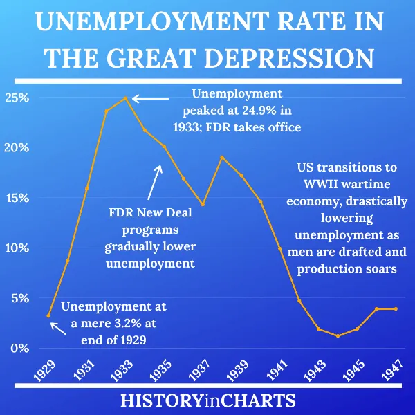

Hoover and FDR's Folly
HIST 102 · Chapter 25 · Lecture 1
Section I
History is not a morality play — it is a stress test
The Story You've Heard
- Hoover was heartless and inactive
- Watched the nation suffer and did nothing
- Caused the Great Depression
- FDR saved the nation
- The New Deal ended the Depression
- Bold action = recovery
The Governing Premise
- The Depression was a stress test of governing assumptions
- Both men inherited philosophies built for different eras
- Neither fully understood the crisis they inhabited
- Our goal: replace moral judgment with historical understanding
What the Standard Story Gets Right
- Banking reform — FDIC ended the bank-run terror; no Depression-scale failures since
- Infrastructure — TVA, Hoover Dam, roads, bridges, rural electrification still in use
- Social Security (1935) — America's first federal old-age pension; permanent safety net
- Federal responsibility — "Washington must act" became the new American consensus
But — Then Test It
- What were the actual economic results?
- Where did programs contradict each other?
- Who paid the political price for the coalition?
- What finally ended the Depression — and when?

Chicago soup kitchen · February 1931 · NARA
⏸ Pause & Reflect
If a policy creates lasting structural reforms but does not end the crisis it was designed to solve — does it succeed or fail?
What would "success" even mean here?
Section II
The Last President of the Old Moral Economy
Who Was Herbert Hoover?
- Born 1874 — Quaker family, orphaned at 9
- Made a fortune in global mining engineering
- Fed 10 million Belgians under German occupation, WWI
- "The Great Engineer" — the most admired man in the world, 1920

Herbert Hoover · c. 1928 · NARA · Public Domain
Hoover's Governing Philosophy
- Voluntarism — cooperation, not coercion
- Associationalism — business, government, civic bodies working together
- Direct federal relief would undermine character
- Democratic citizenship required self-reliance
- These were mainstream progressive ideas of the 1910s–20s
- Worked brilliantly as Commerce Secretary under Coolidge
- Not indifference — a principled theory of democratic society
- Built for a world where downturns self-corrected
The Wall Street Crash, 1929
- Easy credit through the 1920s — artificially low interest rates
- Stock bought on margin — up to 90% borrowed
- Consumer spending slows → margin calls → forced selling
- Self-reinforcing collapse through October–November 1929

Wall Street, October 1929 · Public Domain
The Dow Jones Collapse
−40% in two months
−89% from peak
- No previous American panic had produced anything comparable
- The 1929 high would not be recovered until 1954
- Every prior depression had resolved within 2–3 years — this would not
What Hoover Actually Did
- Rejected Treasury Secretary Mellon's "liquidationist" advice
- Called business leaders to White House — secured voluntary wage pledges
- Created the Reconstruction Finance Corporation — $1.2B in loans to banks and railroads
- Ran a $2.7 billion peacetime deficit — largest in American history to that point
Hoover's Public Works Legacy
- Hoover Dam — authorized and begun under Hoover
- San Francisco–Oakland Bay Bridge — funded under Hoover
- Los Angeles Aqueduct expansion
- Agricultural Marketing Act — hundreds of millions for farmers

Hoover Dam · Begun 1931, completed 1936 · Public Domain
Why Hoover Still Failed
- Smoot-Hawley Tariff (1930) — highest rates in history; trading partners retaliate; exports collapse
- Revenue Act of 1932 — top rate 25% → 63%; largest peacetime tax hike ever; austerity during freefall
- His philosophy required suffering to remain private
- The Depression made it mass, public, inescapable
- Hoovervilles. Breadlines. Veterans in tents in Washington
- No emotional response to match the moment
⏸ Pause & Reflect
Hoover ran the largest peacetime deficit in U.S. history, built more public works than any prior president, and created the RFC.
Why does the "do-nothing" myth persist — and what does its persistence tell us about how we remember the Depression?
Section III
Confidence Before Solutions
The Watershed Election of 1932
- FDR ran on "bold persistent experimentation"
- Simultaneously attacked Hoover for spending too much and doing too little
- Won 42 states, 57% of the popular vote
- Ended Republican dominance that had held since the Civil War

Franklin D. Roosevelt · 1933 · Library of Congress · Public Domain
The First Inaugural, March 4, 1933
FDR's Clearest Success: The Bank Holiday
- March 6, 1933 — declared a national bank holiday; all banks closed
- Emergency Banking Act drafted, passed, and signed within hours
- Sound banks reopened with implicit federal guarantees
- Deposits flooded back in — the panic that had run for three years stopped overnight
The New Deal's Core Contradiction
- National Recovery Administration — suspended antitrust law
- Industries set minimum prices — deliberate cartelization
- Logic: competition was driving wages and prices down
- Result: higher prices reduced purchasing power exactly when it needed to expand
- Agricultural Adjustment Administration — paid farmers to destroy crops
- 10 million acres of cotton plowed under
- 6 million pigs slaughtered
- Food destroyed while people went hungry
Scarcity as Policy
- AAA paid landowners — not tenants
- Mechanization replaced sharecroppers with tractors
- Estimated 500,000 African Americans lost jobs as a direct result of New Deal agricultural programs
- A transfer of wealth from the rural poor to the rural landed class

Arthur Rothstein · FSA · Oklahoma, 1936 · Library of Congress · Public Domain
FDR Tripled the Tax Burden
- After Prohibition repeal — heavy excise taxes on liquor, tobacco, gasoline (regressive)
- Revenue Act of 1935 ("Wealth Tax") — top income rate raised to 79%
- Undistributed-profits tax (1936) — taxed companies for retaining earnings needed for investment
- Corporate investment — already weak — was further discouraged when it needed to grow
The Second New Deal, 1935–1936
- Social Security Act (1935) — old-age pensions and unemployment insurance; America's first federal safety net
- Wagner Act (1935) — legal right to organize and bargain collectively
- Banking reform cemented through FDIC and Glass-Steagall
- NRA and AAA struck down by Supreme Court
- Court-packing plan (1937) — FDR's most serious political miscalculation; defeated in Congress
- Damaged his coalition and emboldened conservative Democrats
The Roosevelt Recession, 1937–1938
"apparent recovery"
after FDR cut spending
- FDR cut federal spending sharply — balanced-budget orthodoxy
- Social Security payroll tax began collecting — withdrew purchasing power
- Fed tightened monetary policy simultaneously
- Result: industrial production fell 33% in thirteen months
Unemployment, 1929–1943
- 1929: ~3.2% — pre-crash
- 1933: ~24.9% — Depression peak
- 1937: ~14.3% — apparent recovery
- 1938: ~19% — Roosevelt Recession
- 1940: ~14.6% — after a decade of New Deal programs
- 1943: ~1.9% — war mobilization

U.S. Unemployment Rate · 1929–1942 · Public Domain
What Roosevelt Did Understand
- Despair itself was politically destabilizing
- The appearance of action was as important as the action
- Fireside Chats — made government audible, present, emotionally real
- He did not end the Depression economically — he ended the feeling of abandonment

FDR delivering a Fireside Chat · c. 1933–1944 · Public Domain
⏸ Pause & Reflect
The 1937 Roosevelt Recession hit right after apparent recovery. What caused it?
- A new banking panic FDR couldn't control
- FDR cut spending and raised taxes during recovery
- The Dust Bowl worsened in 1937
- The Supreme Court struck down Social Security
Section IV
And what that tells us about the limits of peacetime policy
What Actually Ended the Depression
- ~10% of GDP at maximum
- Unemployment still 14.6% in 1940
- A decade of programs — insufficient scale
- ~40% of GDP at peak
- Unemployment below 2% by 1943
- Industrial production more than doubled, 1940–1944
What the New Deal Left Behind
- NRA — struck down 1935, not mourned
- AAA crop destruction provisions — reformed after 1936
- Undistributed-profits tax — quietly repealed 1938
- FDIC — deposit insurance; still operating
- Social Security — still operating
- SEC — securities regulation; still operating
- Wagner Act framework — collective bargaining rights
- Rural electrification, TVA, public infrastructure
The New Deal's Deepest Legacy
- Before 1933: federal government had no role in fighting recessions
- After 1933: "Washington must act" became permanent American consensus
- Every subsequent recession has been met with federal fiscal and monetary response
- This consensus survived every conservative resurgence — 1950s, 1980s, 2010s
⏸ Pause & Reflect
If the scale of spending required to end the Depression was only possible under wartime conditions — what does that tell us about the structural relationship between democracy and economic catastrophe?
Is this a failure of policy — or an inherent limit of democratic governance in peacetime?
The Verdict
- Hoover: right ideas for a self-correcting downturn — wrong for a structural catastrophe
- FDR: restored confidence, reformed structures, prevented worse — but could not end the Depression
- The war ended the Depression — by achieving fiscal scale peacetime politics would not permit
- The New Deal's limits in Lectures 2 and 3 are the backdrop for everything that follows